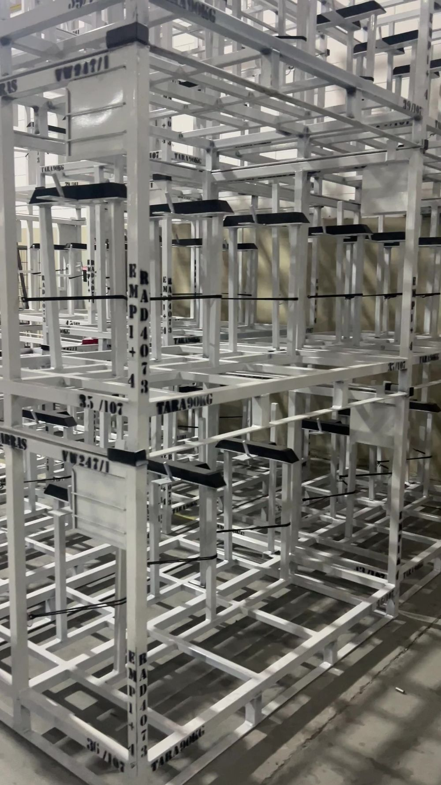
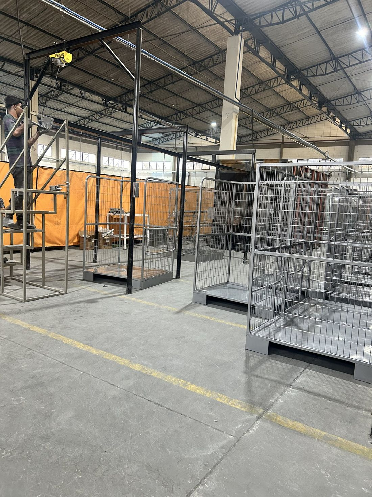
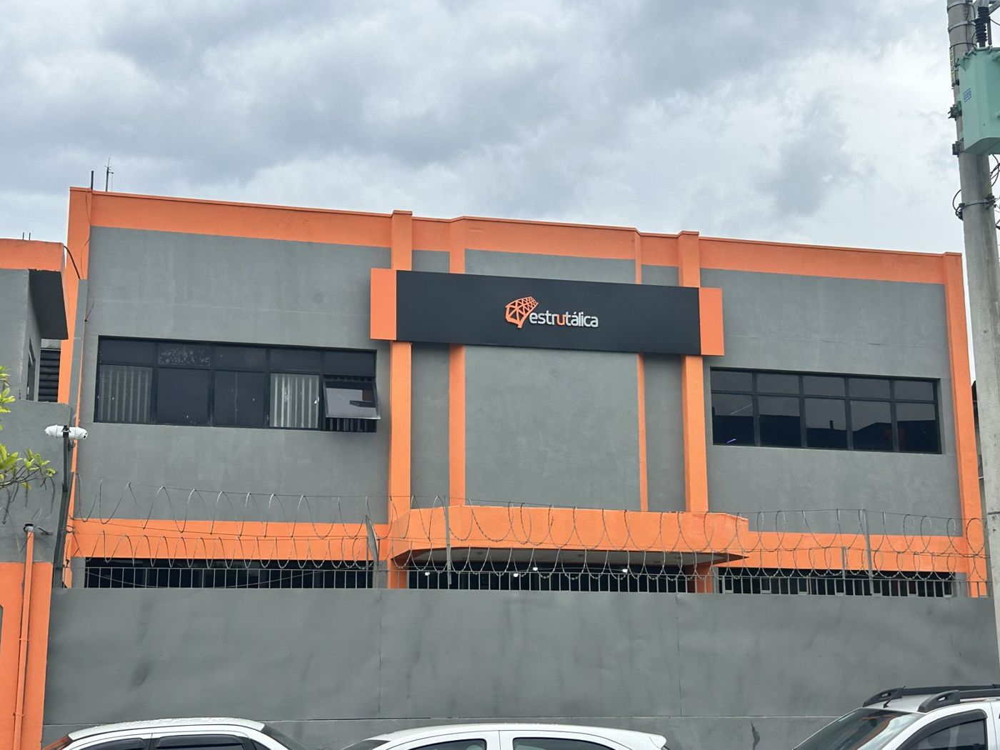
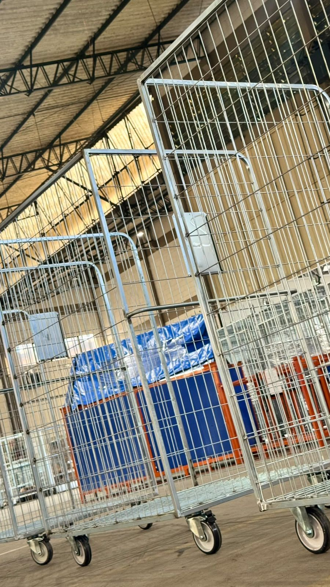
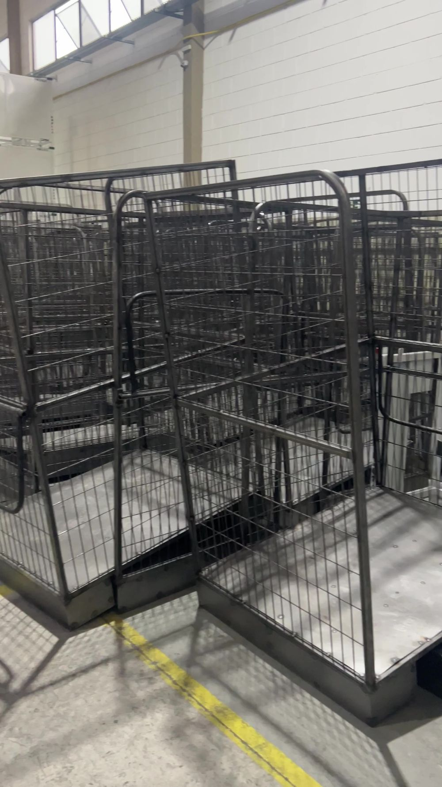
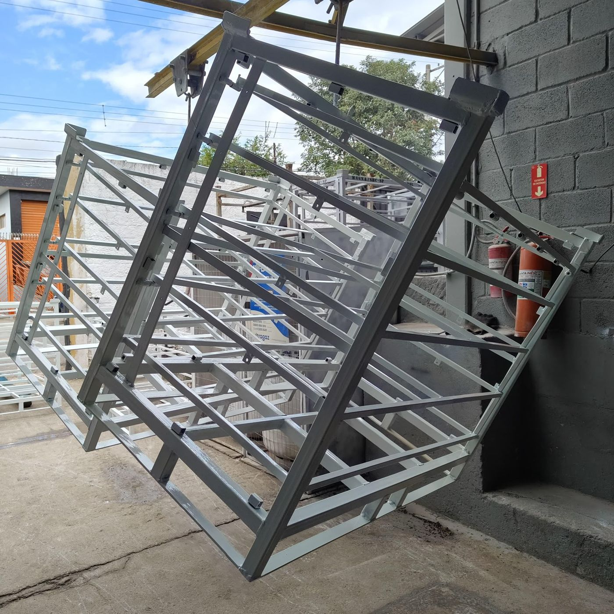
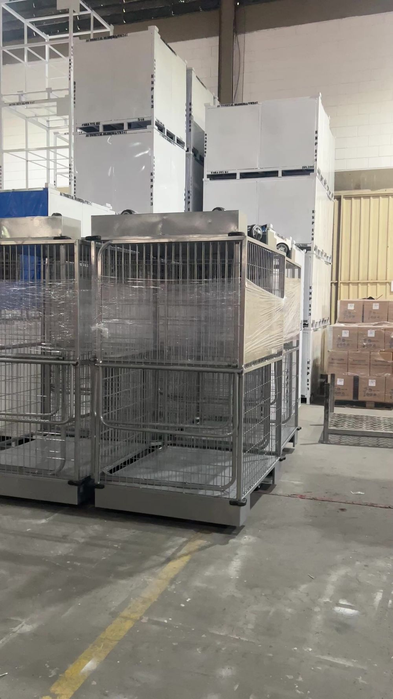
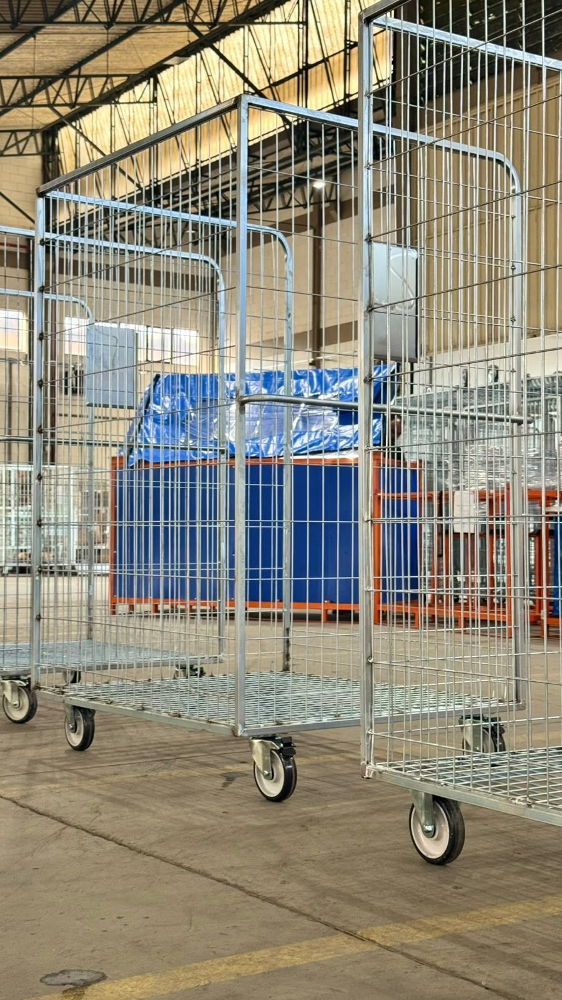
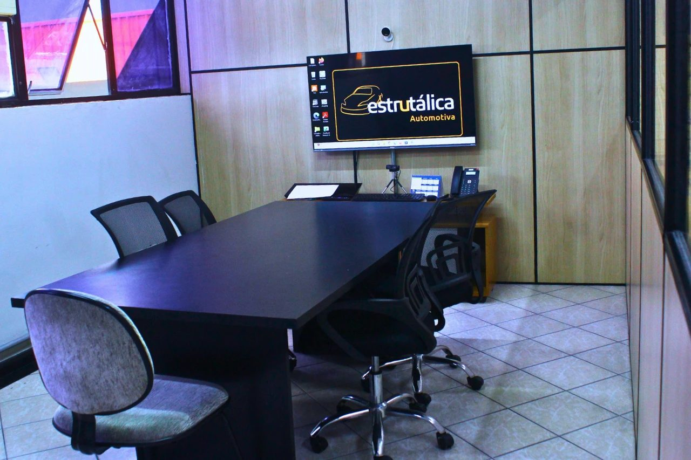

Rack industrial
Desenvolvido para armazenamento e movimentação de componentes.
Racks automotivos, carrinhos para soluções logísticas, bancadas e estruturas metálicas sob medida para movimentação, armazenagem e abastecimento industrial.
Mais de 13 anos no mercado, fabricação própria e projetos desenvolvidos de acordo com a necessidade de cada empresa.
Conte o que sua empresa precisa e inicie o atendimento pelo WhatsApp.


Quem somos
Há 13 anos, a Estrutálica acompanha de perto o desafio da indústria. Desenvolvemos soluções que precisam funcionar não apenas no projeto, mas principalmente dentro da operação real do cliente.
Estamos em Guarulhos, próximos às principais rodovias, como Ayrton Senna, Fernão Dias e Dutra, o que facilita o envio dos materiais para todo o Brasil.
Uma equipe de engenheiros altamente qualificada e especializada em racks automotivos e carrinhos para soluções logísticas desenvolve o projeto completo a partir da sua necessidade.
Já tem um modelo, uma amostra ou um protótipo? Também desenvolvemos o projeto a partir do material enviado pelo cliente, com a melhor solução possível.
Estruturas fabricadas pela Estrutálica para a movimentação, o armazenamento e o abastecimento de componentes industriais.

Desenvolvido para armazenamento e movimentação de componentes.

Projetados para movimentações internas e abastecimento.

Estruturas robustas para transporte de materiais entre áreas da operação.
Para outros projetos, como bancadas e estruturas metálicas especiais, solicite uma cotação.
Solicitar cotaçãoEstruturas que fazem a logística trabalhar a favor da produção.
Quando racks e carrinhos são desenvolvidos para o seu processo, toda a operação ganha previsibilidade.
Transporte mais prático entre áreas e menos movimentações desnecessárias.
Estruturas adequadas ajudam a proteger componentes, equipamentos e colaboradores.
Armazenamento padronizado e materiais no lugar certo para apoiar a produtividade.
Antes de decidir
Antes de contratar uma empresa, analise onde ela fica, se tem capacidade produtiva e se possui uma equipe qualificada. Isso evita:
Na Estrutálica você conta com estrutura completa, da engenharia à fabricação, incluindo pintura eletrostática, que dá mais tempo de vida aos componentes. Também oferecemos a opção de carrinhos galvanizados.
Falar com a Estrutálica
Acabamento com pintura eletrostáticaApresente a sua necessidade. Nossa equipe desenvolve o projeto para você, do primeiro contato até a entrega.
Conhecemos o componente, o processo e o objetivo da sua operação.
Definimos se o melhor caminho é um rack, carrinho, bancada ou projeto especial.
Dimensões, utilização, resistência e características específicas.
Aprovação do projeto, com protótipo quando necessário, antes da produção.
Produção na nossa fábrica, conforme a demanda da sua empresa.
Envio para todo o Brasil, com saída facilitada pelas principais rodovias.


Um processo integrado, do projeto à fabricação, feito por quem conhece a rotina da indústria.
A solução é desenvolvida considerando a realidade da operação.
Soluções produzidas em São Paulo para clientes em diferentes regiões do Brasil.
Conhecimento aplicado às necessidades de movimentação, armazenagem e abastecimento.
Um processo integrado para transformar necessidade em solução.
Temos forte especialização no setor automotivo, mas nossas soluções de movimentação, armazenagem e estruturas metálicas podem atender outras aplicações industriais. Conte sua necessidade para avaliarmos a aplicação.
Racks automotivos, carrinhos para soluções logísticas, bancadas e estruturas metálicas sob medida.
Sim. O desenvolvimento pode considerar as características da peça, dimensões, capacidade, utilização e fluxo operacional.
Sim. Fotos, medidas, amostras e protótipos ajudam a equipe a compreender a necessidade. Você pode enviá-los na conversa pelo WhatsApp.
Dependendo da solução, o desenvolvimento pode envolver prototipagem e validação antes da fabricação em escala.
Quer conhecer nossa fábrica e escritório? É só agendar a sua visita.
